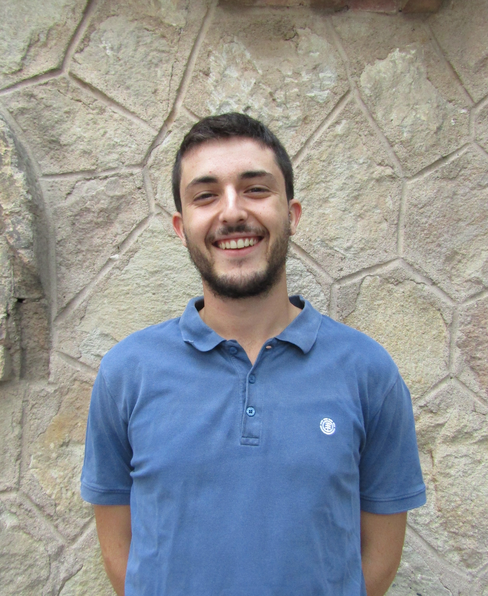
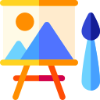
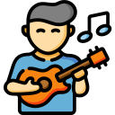

Joan Drago Mateu
Front End Developer
Hello 👋 , my name is Joan, and I develop web applications as well as static websites. My main goal is to develop fast, safe and scalable websites that benefit the SEO for the main searching engines. For the time being, I am developing Wappraiser, a web application based on MERN stack that audits other websites and makes reports.
Experience
Freelance web developer
2020 - Now
I add value to companies by developing web and
web applications that allow them to increase the conversions of their
Online sales. In addition, I have my own projects that I develop with
passion and illusion every day.
MGS Seguros
2018 - 2020
My role in the company was the administrator of the LMS for the
employee training. Among my functions, I designed the
layout of the courses using HTML5, CSS3 and Bootstrap.
Technologies
- 🔸 HTML 5
- 🔸 CSS 3
- 🔸 JavaScript
- 🔸 SASS
- 🔸 Bootstrap
- 🔸 Material UI
- 🔸 React JS
- 🔸 Graph QL
- 🔸 Gatsby JS
- 🔸 Node JS
Education
Master in Web Development
2019 - 2021
The main skills acquired in the Master's Degree
taught by the UOC, are the following: design and implementation of
interfaces, use of the appropriate programming languages and creation of web sites and web applications based on
the need for the project. My master average grade was 9.15 .
FrontEnd architect career
2019
Through the online education platform, Platzi, I got the
FrontEnd architect career degree. We learned the
latest CSS and Javascript techniques in order to carry out real projects
that put into practice the acquired knowledge.
Career in Business Management
2014 - 2018
In 2018 I graduated in Business Management at Pompeu Fabra University,
becoming specialized in Digital Marketing. Fortunately,
most of the things that I learned are appliable to my daily work,
as I learned things such as: marketing research, SEO and SEM techniques, project management skills,
usage of CMSs and development of soft skills (e.g. through public presentations and teamwork).
Other interests

Entrepreneurship
Digital Marketing

Graphic Design
Skateboarding
